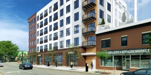
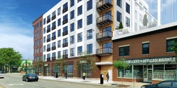

Louis Masato Martin
Hi, I'm a Project Designer with a wide range of experience in building design, documentation, project coordination, and visualization within the Architectural industry. I hope to learn new skills involving coding and software development to further advance my career by leveraging IT skills and supporting the growing needs in the industry. When I am not working on architectural or visualization projects, you can find me working with my 3D printer and desktop CNC machine making anything from small wooden items to custom knife scales for pocket knives. Seeing how various coding languages are used to control these machines, I have been very fascinated and excited to dive into the software development world. I hope to find a challenging position where I can combine my wide range of skills and knowledge to create new solutions to the problems we face today. I also look forward to the journey of working with people from different industries and making new meaningful connections.
Professional Experience
DJR Architecture Inc.
Project Designer 03/20 - 07/23
- Project Lead for a 62-unit affordable housing project from concept planning to construction completion.
- Project development and construction documentation of various affordable and market rate apartments.
urbanworks architecture llc
Architectural Designer 10/12 - 03/20
- Working closely with the Managing Principal, created various Concept Design and Feasibility Study packages to assist developer clients in selecting project sites.
- Supported project teams throughout phases with unit plans, overall plans, elevations, sections, details.
- Full scope of services relating to housing tax credit application for affordable-housing projects.
- Various housing projects successfully awarded tax credits as well as a non-profit dental office approval by MN state legislature.
Freelance
Visualization Consultant 15' - 20', 23' - Present
- Under NDA agreements, I provided product visualization for medical device and logistics companies.
- Product animation production under strict deadlines for presentations to investors.
- Architectural visualization of a condominium amenity renovation for design approval by the Condo Association Board Members, which included series of renderings and a walk-through animation.
Education
University of Minnesota Graduated 11'
- Bachelor of Science - Architecture
- Minor - Environmental Design (Landscape Architecture)
UMN / Tokyo University of Science Summer 10'
- Travel throughout Japan to study historical and prominent architectural sites designed by renowned architects. The class also collaborated with students from Tokyo to explore and document the built environment through a short film.
Minneapolis Japanese School 00' - 06'
- After moving to Minnesota from Tokyo, I continued my Japanese education by attending a Saturday school in addition to an American public school. As a result, I have two diplomas from the public school and Dept of Education of Japan.
Project Gallery
 



contact
louimart@gmail.com
763.772.3525